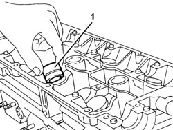
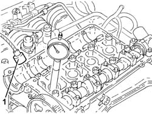

1036H54 hydraulic tappet (one) - replaced with camshaft removed
- Path
- Procedures > 10 ENGINE > 1036 TIMING SYSTEM > 1036H tappets and rocker shafts > 1036H54 hydraulic tappet (one) - replaced with camshaft removed
- Kind
- repair procedure (removal / refitting; the operation number is the code)
- Applies to
- engines: 1.6 TS , 1.8 TS, 2.0 JTS, 2.5 V6, 3.2 V6, 2.0 JTS; all production periods
- Interactive page
- https://sloeber94.github.io/elrnDB-a156/en/#/3237510
Applies to: engines: 2.5 V6, 3.2 V6; all production periods
 Removing
Removing
 Refitting
Refitting1. Withdraw and remove the hydraulic tappet to be replaced from its housing.

Applies to: engines: 2.5 V6, 3.2 V6; all production periods
Refitting
RemovingLubricate and fit a new hydraulic tappet in the housing.
Applies to: engines: 1.6 TS , 1.8 TS; all production periods
Removing
RefittingWithdraw and remove, from its seating in the cylinder head, the hydraulic tappet to be replaced.
Applies to: engines: 1.6 TS , 1.8 TS; all production periods
Refitting
RemovingLubricate with engine oil and fit a new hydraulic tappet in the seating in the cylinder head.
Applies to: engines: 2.0 JTS, 2.0 JTS; all production periods
Removing
Refitting1. Remove the relevant hydraulic tappet using an appropriate magnetic tool

Applies to: engines: 2.0 JTS, 2.0 JTS; all production periods
Refitting
RemovingLubricate with engine oil, then place the hydraulic tappet back in its housing.